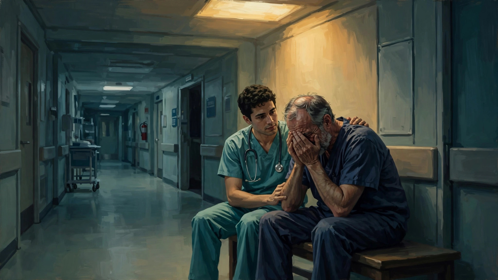
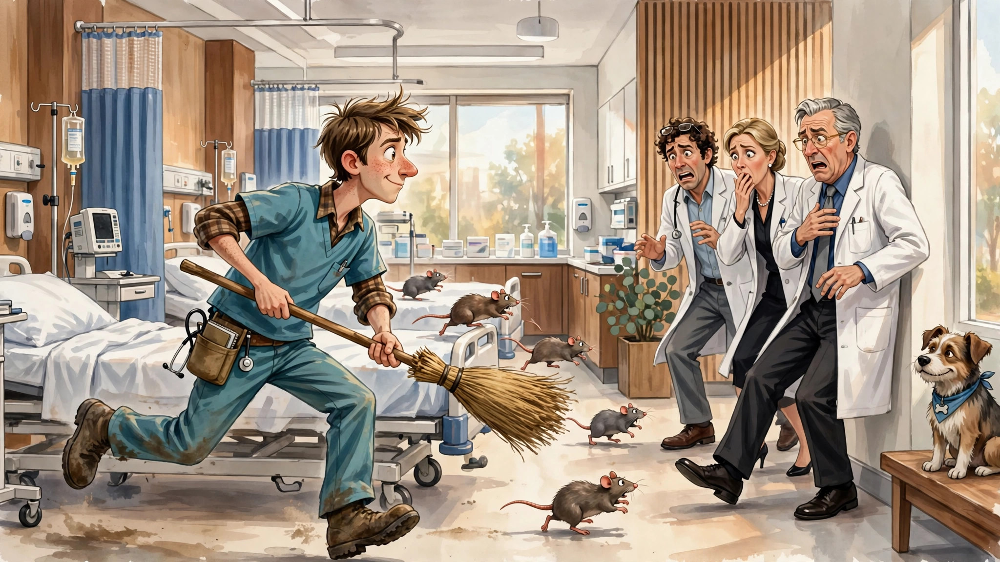

急诊室里的众生相
欢迎点击上方名片关注我。您的支持是我坚持原创的最大动力。
多年前有一部很火的美剧《急诊室的故事》（ER）（港译“仁心仁术”），年代太久远，情节基本不记得了。也不记得看了几季。如果这不算医疗剧的鼻祖的话，至少也是先驱了。据说，稍后一点大火的港剧《妙手仁心》系列就是对这部早期医疗剧的“致敬”。不过不像原剧的硬核和冷静，妙手仁心给急诊室的医生护士加了许多感情戏，更照顾中文区“师奶”观众的喜好。
扯远了。之所以提到ER，是因为多年后其主演之一（在ER中扮演一位年轻医生的诺亚怀尔 ）回归，主演了个一部新的急诊室医疗剧《匹兹堡医魂》（也有翻“匹兹堡医护前线”的，英文名The Pitt），结果第一季一推出就火得一塌糊涂。主创方趁热打铁马上推出了第二季，热度一点不输第一季。两季的豆瓣评分均在9分以上。
刚看完第一季，今天就来说说这部剧。
（剧透警告）
本剧与ER一样，以处于医疗救护最前线的急诊室为背景，地点则从芝加哥来到匹兹堡。时间线与ER比有了较大变化，以急诊室的一个白班（超长的15个小时）为主线，每一个小时一集。这样的时间线结构往往用于纪录片，很少用于电视剧中（如国产剧《长安十二时辰》）。但急诊室瞬息万变，实时时间线更加体现了拯救生命时的争分夺秒。所以15集的篇幅就讲急诊室一天的故事，一点没有灌水的嫌疑，反而无比紧凑和扣人心弦。
由于本剧是群像戏，时间线也是线性的，没有主线故事可言，所以还是以人物结合故事来介绍比较好。
众所周知，医生护士都是专业技术和经验要求很高的职业。所以我按资深程度将匹兹堡急诊室的医护人员分为以下几类（部分标注族裔和性别以便区分）：第一类，大佬级。包括急诊室一把手罗比医生和柯林斯医生（女，非洲裔）。第二类，资深级。包括兰登医生和麦凯医生（女）。第三类，中级。这一类只有莫汉医生（印度裔？女）。第四类，见习医生。包括桑托斯（女，菲律宾裔，但更像白人）和金医生（女）。第五类，医学生。包括维多利亚（印度裔）和维塔克。第六类，护士团队，主要包括护士长达娜、两名菲律宾裔护士和一名帅哥男护士。另外还有一些医院的行政人员，如一位喜欢颐指气使的领导（非洲裔女），还有一位负责心理咨询和公关事务的社工（非洲裔女），戏分不多，就不赘述了。（我这人比较脸盲，看到最后几集才基本把这些人物的名字、身份和相互关系搞个大致清楚。但可能还是有疏漏之处。如有不妥，请观剧达人和专业人士指教。）
主要人物就这些。下面分别讲讲这些医护人员的故事。
罗比医生是团队中最资深的医生，负责的事情很多很杂。除了医生的救死扶伤的本职工作外，他还负责分配、监督和指导下级医护人员工作、见缝插针对初级医生和医学生进行教学培训、鼓舞团队士气、与患者及家属谈话、协调资源等等。总之，感觉这个急诊室负责人简直是超人，日理万机都不足以形容他有多忙。罗比医生虽然具有多年资历，见惯了生离死别，但毕竟心是肉长的，也有脆弱的一面。例如，他的一位多年并肩战斗的同事，在新冠疫情期间不幸离世。罗比医生深受打击，战友牺牲的那一幕挥之不去，时不时在他脑海闪现。
罗比医生有一位养子（看上去像亚裔），父子关系貌似很融洽。继子偶而会来急诊室看望父亲，与父亲及其同事谈笑风生。但在最后两集一场突如其来的变故让他们父子关系陷入危机。那是一场音乐会上发生的无差别枪击事件，养子的女友不幸心脏中弹，送来急救时生命已经危殆。罗比医生尽了最大的努力，甚至这种努力在他同事看来有些不理智甚至过了头，他仍然这么做了。可惜医学终究是有局限的，医生不是神仙，挽救了无数人生命的罗比医生也没能救回养子的女友。为此，罗比医生万分伤心和沮丧。养子听闻噩耗，痛不欲生，非常不理性地怪责罗比医生。罗比医生在万分悲痛的情况下还要面临儿子的指责（虽然他能理解这种极端伤痛下的不理性），情绪一度崩溃。幸好有一位医学生（维塔克）碰巧见到这一幕，及时给了他一些安慰和鼓励，罗比医生才得以走出低谷，重新投入工作。

柯林斯医生资历上仅次于罗比医生，负责承担急诊室中一些技术要求高的急救任务，是罗比医生的得力助手。工作中她精神饱满，精力旺盛。但个人生活中她也有一些难言之隐。她一直想要个孩子，之前曾流产过，这次好不容易又怀上一个。虽然月份还不大，她对这一胎寄予了厚望，甚至与同事聊到中意的婴儿车。可天不遂人意，就在这普通而繁忙的一天中，柯林斯医生不幸再度流产。她忍着身体伤痛和更巨大的心理伤痛继续工作。只有细心的护士长丹娜发现了异常，追问下得知实情，对她表达了同情和安慰。罗比医生不久也知悉此事，坚持要求柯林斯回家休息。可柯林斯知道，作为技术负责人之一，多少同事需要她的帮助和指导，她的缺席一定会给本已不堪重负的同事增加很大负担。最后她婉拒了罗比的好意，还是坚持留下。
兰登是位帅气、干练和果断的中年资深医生，技术扎实，经验丰富。但脾气不太好，有时对资历较浅的同事比较严厉甚至冷酷。剧中对他的私人生活着墨不多，但后面被人发现有个见不得光的个人秘密。发现这个秘密的是一位心思缜密的见习医生（桑托斯）。原来他有药物成瘾（至于是什么导致的剧中没有交代），而且一直没有戒掉。发作时，他会利用工作便利偷拿病人的药。由于他级别较高，加之急诊室的同事都十分繁忙，他的所作所为一直没人留意。直到桑托斯医生看出端倪。她向几位不同的上级医生反映了这件事，但有的医生不相信，有的表示事不关已。偏偏桑托斯医生是个较真的主，她一直把这事捅到了罗比那里。罗比作为一把手当然不能和稀泥，虽然兰登医生是他的得力爱将。在罗比的严厉追问下，兰登不得不承认实情，并让罗比当场从他的储物柜里找到赃物。虽然对兰登的堕落十分心痛，而且急诊室正急缺人手，但讲原则的罗比还是毫不犹豫地当场赶走兰登。不过，兰登在本季最后两集又主动回归，加入了急诊室枪击案的紧张救助。为了尽可能抢救更多的生命，罗比只有暂时对他网开一面。毕竟救死扶伤永远是医生最优先的使命。
麦凯医生和兰登医生年龄、资历都大致相当。她长得漂亮，为人温和而幽默，属于很有亲和力的那种专业人士。麦凯医生婚姻状况不太理想，与丈夫离婚后单身。由于她的职业性质，孩子自然归丈夫抚养。偶尔才母子团聚一次。最近一次团聚的原因有点令人啼笑皆非。麦凯医生的前夫玩滑板时摔伤来到急诊室，孩子无人照料，只得一同带来。麦凯医生对前夫的莽撞十分无语，对他一阵猛批。但另一方面能够见到儿子，她心里还是高兴的。她想借此机会让孩子跟自己生活几天。孩子与母亲关系也没有疏远，也希望多和妈妈在一起。可惜就这么难得的机会，由于后面枪击案让整个急诊室陷入极度忙碌的状态，麦凯医生也没机会多陪陪儿子。
剧里还提到关于麦凯医生的一个细节，与她的温和人设格格不入。她竟然戴着电子脚镣，需要在指定范围活动，也不许取下，否则就会自动报警（至于为什么会戴脚镣，剧里暂时没有交代原因）。后面在参与枪击案抢救时，由于超出指定范围，报警器频繁触发（我也不知道为什么范围会设定这么小，在同一个房间里也可以触发）。为了不影响急诊室的正常工作，麦凯医生做了个大胆的决定，强行解除掉脚镣。然后就不管不顾地投入到紧张的工作中。结果，刚好有警察在急诊室里，发现麦凯医生的电子脚镣被解除，马上就要逮捕她。这时罗比过来找到警察的头儿，说明了是枪击案抢救的特殊情况不得已才这么做。警察头儿一想也是这个理，不能过于不近人情，就吩咐手下放了麦凯医生。看到这里为麦凯医生舒了口气。这个角色我也还蛮喜欢的，非常有亲和力，和人说话是脸上总是带着温柔的笑意。就这么善良的一个医者，很难想象她能做出什么严重犯法的事值得要戴上这么严格的电子镣铐。 期待下一季解开这个谜团。
莫汉是一位有一定资历的中级医生。她性格沉稳冷静，对工作非常投入。但在资深医生看来，她有时过于沉稳了，以至于和急诊室永远风风火火的气氛有些不合拍。不知是哪位上级医生甚至给她起了个slow mo（慢动作）的外号。但她以精湛的手艺顶住了压力，坚持按自己的节奏做事。在挽救生命的同时，也赢得了上级和同事的尊重。要说莫汉有什么缺点，那就是有时对工作过于热情了，甚至在上级要求她回家休息时她仍坚持留下来干活。医生本来就是高强度的职业，长期高压工作本来就非常损害健康，如果再工作狂，就属于不懂得爱惜自己了。
再来讲讲前面提到的桑托斯医生。这位菲律宾裔的初级医生长着一张白人的脸。大家本来没有发现这一点，直到有一次，两个菲律宾裔的护士在用母语交谈，可能话题涉及了桑托斯。桑托斯突然乱入了一句，把两个护士惊得差点掉了下巴。桑托斯医生级别不高，但一点也不怕事。她天生正义感爆棚，眼里揉不得沙子。当她发现上级兰登医生偷拿病人药的丑事后，就一直向各个上级医生反映。屡屡碰到阻力或冷眼，她也不气馁，继续换人反映。直到罗比采信了她的话，把兰登赶走。但后来兰登自发回来加入枪击案的急救，她倒也没阻拦或者为难他。说明她不是报私仇，的确就是正义感驱动罢了。
桑托斯医生不但不怕得罪上级，对比她低一级的医学生也是毫不客气。但与前面的正义感驱使相比，这种对后辈的不客气显得有点mean了。例如，她爱给后辈起外号。一个叫维多利亚的医学生第一天来急诊室，看到血淋淋的场面居然直接晕倒了。不厚道的桑托斯硬是给维多利亚起了个“crash girl”的外号。后来维多利亚明确向桑托斯表达了她对这个外号的不满和不快，但桑托斯一点不在意她的感受，继续叫她“crash girl”。一个医生在与人相处方面的情商这么低，也算让我看了眼。不过这从另一个侧面也说明她技术肯定是过硬的，要不早被同事给集体扔出来了。
好在在最后一集桑托斯医生通过一件小事为自己的人品扳回一局。在紧张的一个白班过后，她无意间发现医学生维塔克留在医院没走，在某个狭窄的房间清洁上身。于是她主动邀请维塔克去她家，总好过在医院的角落里将就。从这件小事可以看出，虽然嘴毒性格不讨喜，桑托斯医生总归还是个善良的人。
与桑托斯差不多同级的金医生，虽然资历较浅，但人很聪明，一看就是很有前途的明日之星类型。她为人敏感，时不时喃喃自语，让人有点怀疑她是不是有阿斯伯格综合征。但敏感对于天才来说却是优点，这种人往往会跳出常规思维的框架，看到常人看不到的细节。所以在实际工作中，她表现优异，多次展现出超越她资历和经验的技术水平。生活中她也有她的不幸，她有个自闭症的妹妹需要她照顾。幸运的是，妹妹的病似乎不是很严重，还有一定认知水平。姐妹俩感情很好，互相关心和照顾。在这样的家庭环境下，金医生能成长为一位优秀的医生，殊为不易。
医学生维多利亚是一名“医二代”，虽然她非常不情愿让人知道这事儿。她的母亲是同一家医院的一位大牛，牛到什么程度呢，像麦凯这样的资深医生一看到她都如同看到明星一样兴奋，生怕错过了向其学习请教的机会。维多利亚其实是个很励志的孩子，顶着医二代的光环，还是完全靠自己的努力当上了医学生。所以她最不希望别人知道她的真实身份，否则再怎么努力也说不清了。可能就是因为有这种心理压力，她居然在第一天实习时因为看到血腥场面晕倒过去。也正因为此，从毒舌桑托斯医生那里喜提“crash girl”的花名。还好，她后来克服了种种心理压力，在资深医生和她母亲的指导下，进步很快。慢慢也摆脱了心理压力，能够坦然投入工作。
作为最年轻的一代医生，维多利亚也有点“恋爱脑”。她对帅气的护士小哥一见钟情，几次搭讪希望引起对方注意，但对方似乎根本没注意到她这小屁孩儿。后来正当她有点像丑小鸭一样准备放弃希望时，却惊喜地发现护士小哥准确地叫出了她的名字“维多利亚”。她喜不自胜，在所有人都叫她“crash girl”让她郁闷不已时，自己的心上人居然能记得自己的名字。看下一季这两小只会不会继续擦出浪漫的火花了。
医学生维塔克来自内布拉斯加的一个农场，用中国语境来理解可以说是来到大城市的小镇做题家。这小伙子运气有点背，第一天实习就遭遇了各种倒霉事。例如，一位昏迷中的病人把巨大一泡尿喷到他身上，像洗了个澡一样。去换了个衣服，不合身，也没办法。后来又有几次他的衣服被各种突发状况搞脏，又换衣服，结果不是不合适就是不合身。当最后就没衣服可换了。更离谱的还在后面。一位流浪汉被送到急诊室，“随身”带来了几只硕鼠。别看急诊室的医护人员个个是精英，但见到这么大的老鼠到处乱窜，难免大都吓得花容失色。这时“农场男孩”维塔克挺身而出，担当起捕鼠的重任，可惜几次都没成功。最后还是某位患者带来的宠物狗解决了问题，成功抓到了一只。但把老鼠“遗体”转移这善后的事还是交给了维塔克。

别看维塔克只是个医学生，抗压能力和情商还是蛮高的。前面的这些倒霉事他没怎么放心上，糗是糗了点，但这些只是他赶上倒霉事，和他的专业能力无关。相比另一位医学生维多利亚，他心理素质显然更好。急诊室的快节奏不容许医护人员一直带着负面情绪。维塔克在这方面就做得很好，一件糗事发生了就发生了，接下来该怎么工作怎么工作。所以他成长很快，哪怕只是短短一个白班的工作，下班时的他已经和刚进急诊室那会青涩紧张的他不可同日而语了。
说到情商这东西，看来是天生的，和你的资历、技能啥的没啥关系。前面说到，急诊室的一把手罗比在枪击案抢救中未能成功挽救养子的女友，情绪一度崩溃，一个人躲在一个房间里喃喃自语。维塔克恰巧经过，给了处于最脆弱状态的前辈医生一些温暖的安慰和鼓励。罗比后来为此事专门感谢了维塔克。人毕竟是社会性动物，在最难过的时候，另一个人在情绪上给予的安抚可谓雪中送炭。而这另一个人可以是任何人，你的前辈后辈、男女老少，都不重要，重要的是这时伸出的援手。所以与其说维塔克情商高，不如说他本就有一颗善良柔软的心。比起高超的医术，这是一位合格医者更应该具备的。所谓仁心仁术，仁心始终是放在前面的。
护士长达娜能力出众，备受同事尊敬。多年的工作经验给了她高超的协调能力和敏锐的判断力。她对同事关心、爱护，对患者耐心、周到。她领导的护士团队紧密配合医生，提供了专业的护理支持。压力大时，她会到医院门口抽上几口烟放松放松。碰到不讲理的患者，她该坚持原则坚持原则，决不退缩。在过去的工作中，她多次遭到暴力攻击，仍然挺到现在。在这个普通而又不普通的白班里，她再次遭受这种不公平的暴力。在劝阻一位因排队太久而不满离开的患者后，她在一次出门抽烟的时候，被返回的该患者突然袭击。
满面是血的她回到急诊室，在同事帮她做简单的伤口检查和处理后，她选择了继续工作。其实这次她的情绪近乎崩溃，几难支撑。医护人员是救死扶伤的，他们永远是站在患者一边的。可是总有不讲理的患者会把医疗资源和医学的局限怪罪到他们头上，对于他们来说最委屈的事莫过于此。达娜一度心灰意冷，打算退居二线算了。同事也纷纷劝她先回家休息。但坚强的她最终还是恢复了工作状态，因为她深知，她作为护士团队的头，扮演的是急诊室里不可或缺的角色。
本剧展现的医护前线众生相应该是全世界医护人员的真实缩影。给这些战斗在一线的医护人员 “白衣天使”的赞美很容易，但真正理解他们的压力、辛苦、委屈、坚持，还是得靠近距离观察他们的工作状态才能实现。《匹兹堡医护前线》给了普通人一个难得的视角，可以沉浸式体验急诊室医护人员的“普通”一天。看完你就能理解“排队两小时，看病两分钟”的无奈，也能理解为啥医护人员难得一笑。在医疗资源稀缺的大背景下，在日复一日的高压工作环境下，世界范围内几乎所有医护人员都在超负荷工作。正是他们的辛勤付出，才有了现代医疗日新月异的突飞猛进，也有了人类预期寿命的长足进步。所以，让我们对医护人员心怀感激和尊敬。当我们最无助时，是他们始终和我们站在一起。记住，不管结果好坏，他们都为我们拼过命。